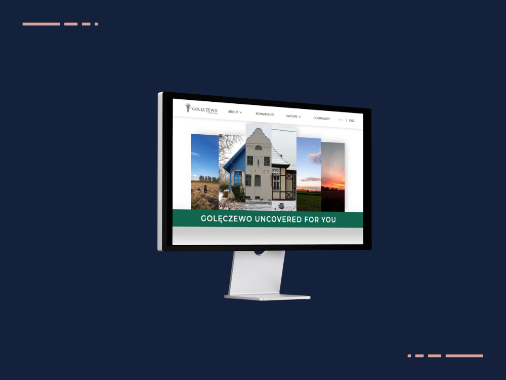

VISIT WEBSITE
GOLĘCZEWO FOR YOU
From Research to Deployment
 December 2022
December 2022
 3 weeks
3 weeks
 Natalia Sokolowska
Natalia Sokolowska
 HTML, CSS, JavaScript, Adobe XD
HTML, CSS, JavaScript, Adobe XD
For my first-semester exam project, I developed a tailor-made website dedicated to my hometown in Poland, specifically designed to assist new residents. Over the course of an intensive three-week period, I undertook a comprehensive journey encompassing UX research, design, prototyping, user testing, and coding to bring this project to realisation.
Visit the website here.